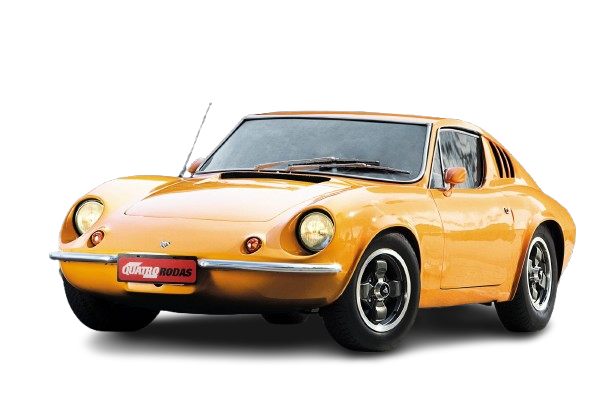

PUMA GTE
Com sua carroceria de fibra e alma de esportivo artesanal, o Puma GTE é o sonho brasileiro em forma de carro, que até hoje acelera paixões e evoca a era de ouro da esportividade nacional.

HISTÓRIA
O Puma GTE 1979 é um ícone da indústria automobilística brasileira, conhecido por seu design esportivo e desempenho robusto.
Com sua carroceria de fibra de vidro e mecânica e chassi Volkswagen, o Puma GTE se tornou objeto de desejos tanto no brasil, quanto no exterior.
Em termos de mecânica o Puma GTE era equipado com um motor VW Boxer 1.6 refrigerado a ar e dupla carburação, originário do Fusca 1600.
Essa motorização é conhecida por sua durabilidade e a facilidade de manutenção, o modelo vinha equipado com uma transmissão manual de 4 velocidades, também compartilhada dos modelos VW, que embora seja um câmbio simples, proporciona trocas precisas e é robusta o suficiente para o desempenho do carro.
FICHA TECNICA
Modelo: Puma GTE
Ano: 1978-1980
Motor: 1.6 gasolina
Potência: 70 cv
Torque: 12,3 kgfm
0–100 km/h: 16,7 s
Vel. Máx: 158 km/h
Peso: 785 kg
Tração: Traseira
Câmbio: Manual 4 marchas
Dimensões (C×L×A): 4.000×1.665×1.200 mm
CURIOSIDADE
Uma das maiores curiosidades e o grande diferencial do Puma GTE é sua carroceria de fibra de vidro sobre um chassi tubular, o que o tornava incrivelmente leve para a época.
GALERIA
Imagens do Puma GTE
Canal: Carro Chefe